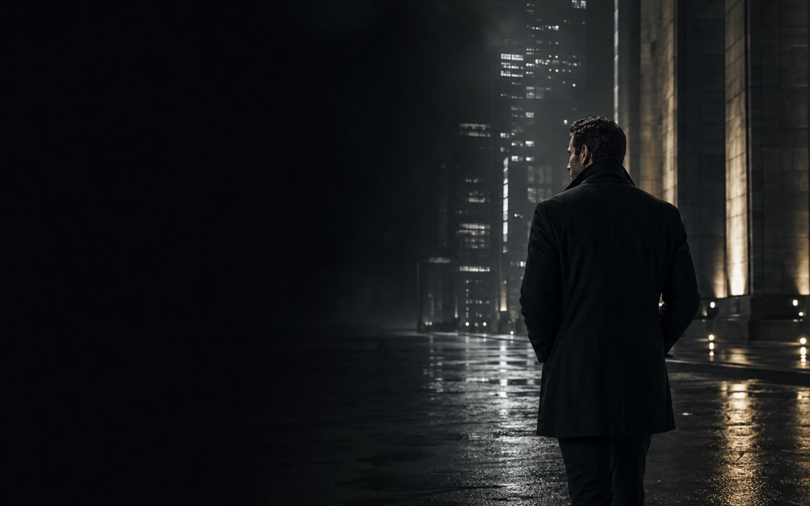

SITUATION
Конкретный конфликт

LIFE RPG · SEASON 01 / POINT A
НЕ ТРЕКЕР · МИР ПОМНИТ ДЕЙСТВИЕСюжет даёт взрослый выбор. Реальное действие меняет героя, отношения, районы Meridian и финальную последовательность.
Mira замечает: ты не обещал максимум — ты вернулся.
+4 STABILITY · RETURNSITUATION → CHOICE → ACTION → CONSEQUENCE
Сон может стоить статуса, граница — близости, а амбиция — восстановления. Пропуск не стирает прогресс.
Конкретный конфликт
Необратимая цена
3–10 MIN
Мир отвечает
Возврат — навык
02 / VERIFIED CONTENT CONTRACT
Сюжет, квесты и реальные действия работают в одной системе последствий.
Критических ветвлений
Условных вариантов
Квестов в runtime